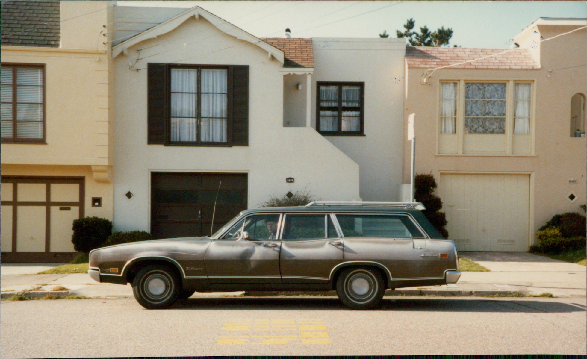

Stadtplan San Francisco mit unserem Haus links unten.
1980
Unser Haus lag im Sunset District. Ein einfaches Holzhaus. Eines von vielen, die nach dem Zweiten Weltkrieg in die damals noch weitgehend unbesiedelten Dünen am westlichen Rand San Franciscos gebaut worden waren. Für Amerikaner vermutlich nichts Besonderes. Für uns war es das erste eigene Zuhause in Kalifornien.
Den Stadtteil nannten die Einwohner treffend „Sunset District“. Hier versinkt die Sonne abends langsam im Pazifik. Am Horizont sieht man die Schiffe in Richtung Golden Gate heimwärts tuckern. Wenn denn kein Nebel ist. An San Francisco vorbei fließt der von Norden kommende, kalte Humboldt-Meeresstrom nach Süden. Von Westen weht der feuchte Pazifikwind, trifft auf den kalten Meeresstrom und kondensiert zu Nebel. Der Nebel sucht sich dann den Weg des geringsten Widerstandes: nämlich die Golden-Gate-Lücke. So wird verständlich, dass der Nebel sich immer nur dann bildet, wenn der Pazifik sich erwärmt hat – nämlich im Sommer – und weshalb er in San Francisco besonders ausgeprägt ist.
Mark Twain schrieb einmal: „Mein kältester Winter war der Sommer in San Francisco.“ Damit hatte er Recht. Es ist nicht selten, dass man im Sunset District im Sommer heizen muss.

Um uns herum wohnten überwiegend Chinesen, mit denen man gut auskommen konnte. Man sah sie morgens in den Bus einsteigen, und kaum hatten sie Platz genommen, schliefen sie auch schon. Neben uns wohnten Cathy und Joe Li, angenehme Menschen, die nachts laut schnarchten. Da die Häuser eher bessere Bretterbuden als massive Gebäude waren, bekam man davon einiges mit.
Alle Häuser im Sunset District sind ähnlich gebaut. Unten gibt es die Garage auf einer Seite. Daneben Abstellraum, Werkbank und Waschküche. Eines ist noch wichtig zu erwähnen: die Heizung. Falls man sie überhaupt so nennen kann. Sie besteht eigentlich nur aus einem Gasbrenner, der unter dem Fußboden des Obergeschosses angebracht ist. Im Fußboden befindet sich eine Öffnung, durch die die heiße Luft nach oben ins Haus geleitet wird. Mit einer Klappe kann man den Luftstrom entweder ins Wohnzimmer oder in den Flur und die übrigen Räume lenken.
In unserem Haus gelangte man von der Garage über eine Treppe in den Flur. Von dort ging es in die Küche mit Essbereich, das Wohnzimmer, das Bad und die beiden Schlafzimmer. Damit hatten wir sogar ein Gästezimmer. Das war wichtig, denn Besucher aus Deutschland waren bei uns keine Seltenheit.
Besonders lebhaft erinnere ich mich an Hermann-Josef Hünerbein aus der Morbacher Apotheke. Er besuchte uns mit einem Freund für einige Tage im Hochsommer. Kaum angekommen, wollte er am nächsten Morgen nach Downtown San Francisco. Wir gaben ihm einen gut gemeinten Rat „Nimm für den Nachmittag eine warme Jacke mit.“ Denn spätestens am frühen Nachmittag rollte der kalte Nebel in die Stadt. Hermann-Josef winkte ab. Das sei nicht notwendig. Schließlich herrsche strahlender Kalifornien-Himmel. Am Abend kam er bibbernd zurück. Der Sunset District hatte ihm innerhalb weniger Stunden einige romantische Vorstellungen über Kalifornien ausgetrieben.
Ähnlich verhielt es sich mit dem Strand. Man konnte ihn von unserem Haus aus sehen. Viele Besucher verspürten daher den natürlichen Drang, am Pazifik baden zu gehen. Der Drang hielt meist nur bis zum ersten Kontakt mit dem Wasser an. Der Pazifik ist dort eisig kalt. Ich selbst bin einmal hineingegangen. Im September, nachdem der Ozean sich aufgeheizt hatte und die heißen ablandigen Santa Ana-Winde den Ozean zusätzlich erwärmt hatte. Aber nur mit den Füßen!
Den Altweibersommer in den Monaten September / Oktober nennt man in den USA "Indian Summer". Es ist die schönste Jahreszeit in San Francisco. Nicht zu heiß und nicht zu kalt. Ich liebte den frühen Morgen, wenn man am Wochenende im Halbschlaf die Motorsegler hörte. Dann wusste man, dass das Wetter ausgezeichnet war und der Tag und vielleicht das gesamte Wochenende gut werden würde. Nach dem Aufstehen würde uns ein strahlend blauer Himmel ohne ein einziges Wölkchen erwarten. California Sky. Und dann ging das wunderbare kalifornische Wochenende los. Totales Urlaubsgefühl! Noch heute überkommt mich ein warmes Gefühl, wenn ich in Deutschland das Geräusch von Motorseglern höre. Dann kommt sofort die Erinnerung an die magischen kalifornischen Wochenenden.
Im Hochsommer war das Wetter aber komplett anders. Man musste garnicht nach draußen schauen, um zu wissen, dass eine dicke Suppe über uns lag. Die Nebelhörner sagten es uns bereits. Dr Sommernebel ging uns manchmal ziemlich auf die Nerven. Deshalb fuhren wir an manchen Wochenenden zu Ulli und Derek nach San Jose. Dort, im Landesinneren und kaum sechzig Kilometer entfernt, herrschte meist strahlender Sonnenschein. Wir machten unsere Heizung aus. Ulli ihre Klimaanlage an. Irre. Und zwischen uns lagen gerade einmal sechzig Kilometer.
Trotzdem hatte der Nebel seinen eigenen Reiz. Viele ältere Bewohner schätzten ihn als natürliche Klimaanlage. Auch wir mochten diese besondere Stimmung. Nebelhörner tönten durch die Nacht, und dazwischen hörte man manchmal die Seehunde an der Küste.
Very San Franciscan.